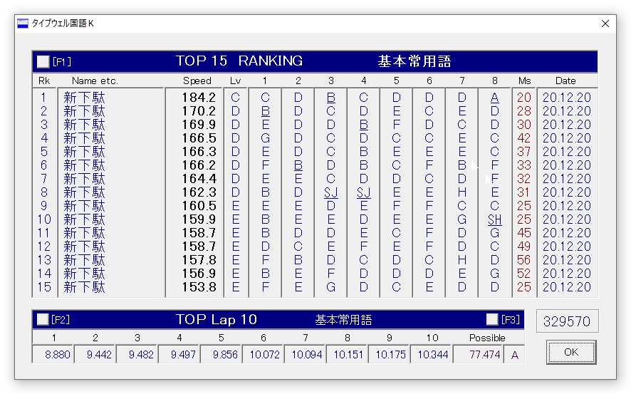

さて、前の投稿で新下駄配列の日常的な常用を始めたと書いてから、一ヶ月と少し経った。
常用して以来、あまりタイピングゲーム自体やらなくなってしまったのもあり、数値を気にすることも減っていたのだが、久々にプレイしてみたらいつの間にかSpeed 160くらいが平均的に出るようになっていた。
体感的にも、普段から利用できるというレベルすれすれというか、急ぐときはローマ字入力に切り替えて使うものの仕事でも普段も使用しているので、スピードは上がったなという感覚はある。
けど最初からあまり速度的なことには興味がなくて、あくまで仕事でタイピングする方法とは違うのんびりまったり疲れない長時間タイピングを目指して新下駄配列を利用していた身としては、Speed 130で高止まりしていた速度がここに来て高速化したのは意外だった。
配列作者は相当高速に打鍵しているのを知っていたので、ポテンシャルはありそうだと思っていたものの、個人的に高速化に興味がなかった分、速度に限界がありそうな気がしていたので、やっぱり使えば使うほど速くなるのだなと改めて実感した。
元々、仕事ではローマ字入力、家では新下駄配列と分けて使うつもりでいたので、毎日使っていればそりゃあそろそろ上達もしていくかという感じだけれど、最近は思考自体少しずつ新下駄配列が頭に浮かぶ頻度も増えてきている気がするので、元々速度に興味はなかったものの、少しずつ手足のようになっていくことは喜ばしい。
やはり速く打てるように慣ればなるほど効率がよくストレスがないのは明らかなので、一応自分の速度面での課題を分析してみると、やはり拗音拡張の暗記と、もう少し左右キーの入れ替わりミスを減らすことだろうと思う。
出現頻度の低い文字はなかなか高速打鍵が進まないのは、清濁同置の配列の特に難しい点だなと、練習を開始して4ヶ月も経った今ですら思う。新下駄配列の高速化には、他の配列よりも練習量が物を言うという気が、最近とてもする。
これを早く是正するには新下駄配列用の練習文字列のようなものを訓練していくのが早道だと思う。けど、そんなに焦ることもないし、そのために時間をとるのはとてももったいない気がするので、気ままに様子を見てみようと思う。
…ところで、最近少し新下駄配列にほんのちょっとのだけ改良を加えて使っていて、それが薙刀式の「点と丸を確定入力にする」というのと、改行キーをエンターキー以外にも割り当てること。
というのも、新下駄配列で入力しているときのほうがなんだかエンターキーに手を伸ばすのがやや辛い気がしていて、理由はわからないけれど、とりあえずエンターキーを入力する回数が減れば問題ないだろうという考えから上記の改良を加えてみたところ、個人的に随分と手が楽になった。
肩の痛みがあったときにも、ダブルキーボードを導入したら俄然良くなったのと同じように、こうして少しずつ問題点を一つ一つ余裕のあるときに直すのは良いなと思ったし、薙刀式のように補助キーも含めて配列をトータルでデザインしていくのは大切なのかもしれないと改めて気付かされた。
なかなか他のことに集中していると、そういう違和感に気づくことが減ってしまうのだけれど、マインドフルネスを心がけつつ違和感にもっと気づくことができるようにしていきたいなと思う。
さて、いま一度自分が新下駄配列、もとは薙刀式や親指シフトを練習し始めた最初の動機である、「休日もパソコンに向かって思索を練ったり文字書きする」という目的が達成されたかをいま一度考えてみると、相当に達成されていると思う。
自分が休日にはパソコンに向かうことがなかった理由を当時分析して、文字入力するときのストレスをトコトン減らすということから、かな配列をいろんな種類試してきて半年近く。その過程で、休日にかな配列練習のためも含めて随分パソコンに向かうようになって、個人的にはよかった。
なかなか自分の普段考えていることとか、ブログにも書くことがないその日の小さな気付きとか思いとかを、一つ一つ大切に記していきたいなという最初の動機は、今ではNotionや新下駄配列、ダブルキーボードなどのおかげで相当に達成されて来ている。
ブログの更新というのは特に目的には入ってなかったものの、副次的な効果としてこうやって思いを自分のメモにとどまらず残していけているというのは良いことかな。
もちろんその分だけ今まではその時間にやってた何かが消えているということではあるのだろうし、自分の目的の動機以上にかな配列に今年は時間を割いてしまったのは否めないけど、とても充実していて良い時間だった。
……蛇足にはなるけれど、そもそもかな入力に触れた最初のきっかけは、亡くなった祖父がかな入力と一太郎が好きだったなというのをある日思い出して、それを真似して見たら案外楽しかったというのが最初のかな入力の導入のきっかけだった。かな入力を最初に教えてくれたのも祖父だったように思う。
振り返ってみれば、祖父がかな入力と一太郎を使って書いていたのは自伝のようなものだったと思うので、自分がかな入力に向かう動機というのは、自分の時間や思考を大切にしたいという意味で、そのまま遺伝しているのかもしれない。